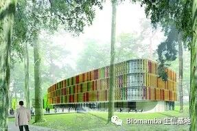
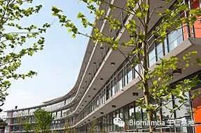
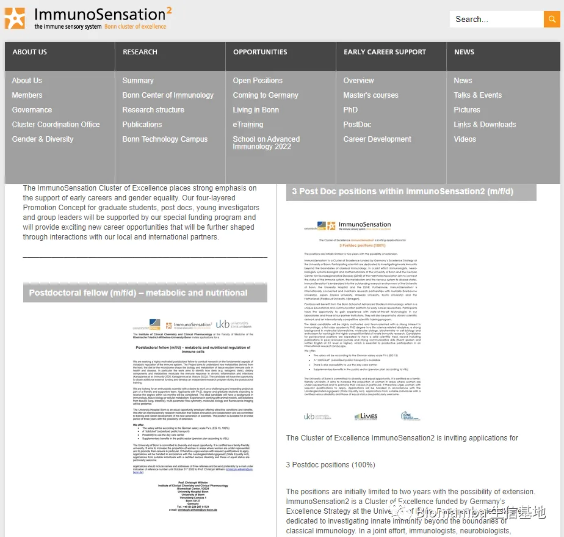

8 PhD positions
原文：https://mp.weixin.qq.com/s?__biz=MzAwMzIzOTk5OQ==&mid=2247494632&idx=2&sn=d9b506b6fb2eec554da901337f1752cc&chksm=9b3c92b8ac4b1bae7fc19317d0bbacfbe5e3b11703f07fca6eab52310d35cfa66fa3098dc2d3#rd 合集：求职/求学/招聘
The Cluster of Excellence ImmunoSensation2 is inviting applications for 8 PhD student positions (m/f/d) (65%) at the Bonn Graduate School of Immunosciences and Infection. Positions are initially limited to 3 years.


 I. the Introduction of ImmunoSensation2
I. the Introduction of ImmunoSensation2
- ImmunoSensation2 is a Cluster of Excellence funded by Germany’s Excellence Strategy at the University of Bonn. Participating scientists are dedicated to investigating innate immunity beyond the boundaries of classical immunology. In a joint effort, immunologists, neuro-biologists, systems biologists and mathematicians of the University of Bonn and the German Center for Neurodegenerative Diseases (DZNE) of the Helmholtz Association aim to connect the status of the immune system, the metabolism and the nervous system to disease states.
- ImmunoSensation2 is embedded into the outstanding research environment of the University of Bonn, the University Hospital and the DZNE. Furthermore, ImmunoSensation2 is internationally connected and maintains research partnerships with Australia (Melbourne University), Japan (Osaka University, Waseda University, Kyoto University) and the Netherlands (Radboud University, Nijmegen).
II. Position Benefits
-
Students will have the opportunity to receive additional financial support to participate in an official student exchange program (3 to 6 months) with selected principal investigators at these partner universities.
-
****PhD students will be admitted to the Bonn International Graduate School Immunosciences and Infection. In this structured PhD program, students gain experience with state-of-the-art technologies and become part of a vibrant scientific network and an internationally competitive scientific training program.
III. Requirements
- The ideal candidate will be highly motivated and team-oriented with a strong interest in immunology, a first-class academic degree in a life science-related discipline (Master’s degree or equivalent), a strong background in molecular biomedicine, molecular biology, biochemistry or cell biology and enthusiasm for working in the highly-competitive field of innate immunity research. Candidates should have strong communicative skills (fluent spoken and written English) since these are necessary for work in an international research landscape.
IV. Treatment
- We offer
● The salary will be according to the German salary scale TV-L (EG 13)● A “Jobticket” (subsidized public transport) is available● There is also a possibility to use the day care center● Supplementary benefits in the public sector (pension plan according to VBL)
- The University of Bonn is committed to diversity and equal opportunity. It is certified as a family-friendly university. It aims to increase the proportion of women in areas where women are under-represented and to promote their careers in particular. If therefore urges women with relevant qualifications to apply. Applications will be handled in accordance with the Landesgleichstellungsgesetz (State Equality Act). Applications from suitable individuals with a certified serious disability and those of equal status are particularly welcome.
V. Application materials and contact information
-
Applicants should send their application in a single pdf file (max. 5 MB) including motivation letter, CV, scanned academic degrees, list of publications and the contact details of two references.
-
In your application, please indicate your preferred scientific project. More information on the scientific projects and project leaders can be found below, and more detailed information will be provided during the recruitment process. Successful candidates can begin on 1.1.2023 or upon request.
-
Please send your application by email using the reference number 747_2022 to the Cluster Coordination Office until November 13th, 2022 to Dr. rer. nat. Catherine Drescher Cluster of Excellence ImmunoSensation2 University Hospital Bonn Venusberg-Campus 153127 Bonn
● Phone: +49 (0)228/287-51288● Email: applications_immunosensation@ukbonn.de
Link:
https://www.immunosensation.de/opportunities/open_positions.html

 往期回顾
往期回顾
 您点的每个赞，我都认真当成了喜欢
您点的每个赞，我都认真当成了喜欢